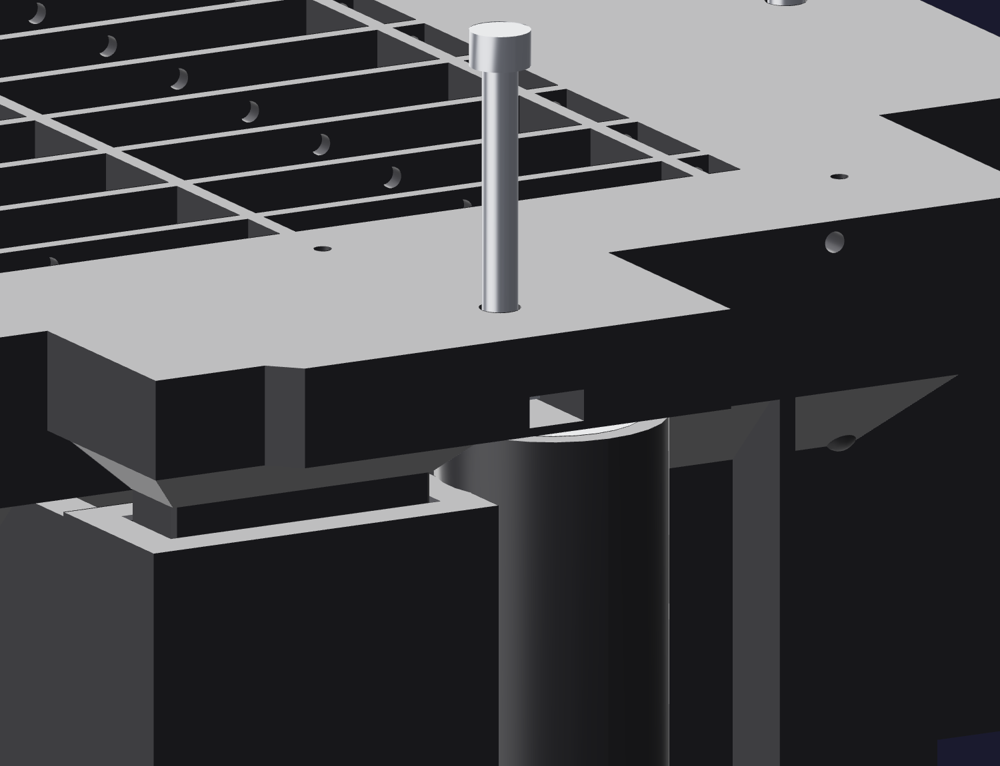

The part11
Find zero
Before anything lifts, all four screws have to start from the same place. That place is the moment each tip just touches its washer.

- Take the holding weight and board off.
- Turn each screw down by hand until its tip just contacts its washer. By feel, with the hex key — you are looking for the first change in resistance, not for tightness.
- That is zero-lift. All four now, before any of them go further.
⛔ The hand key, only
A powered driver will overload a printed ear long before a stuck casting lets go. The hex
key that came with the screws is the tool, because resistance is the instrument you are
reading.